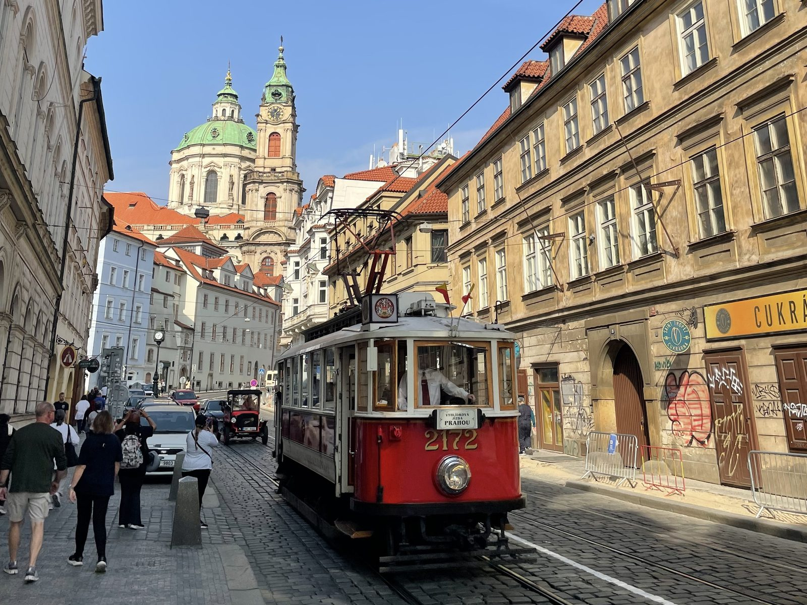
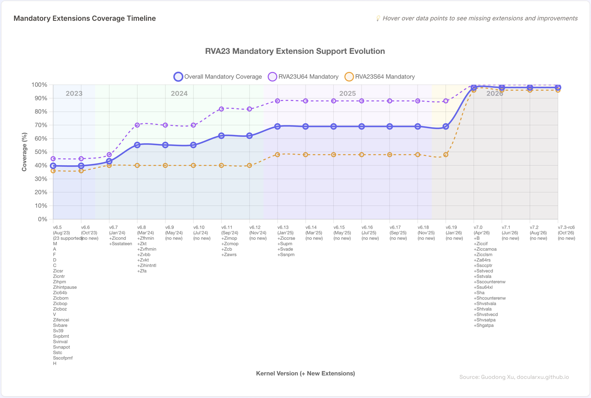
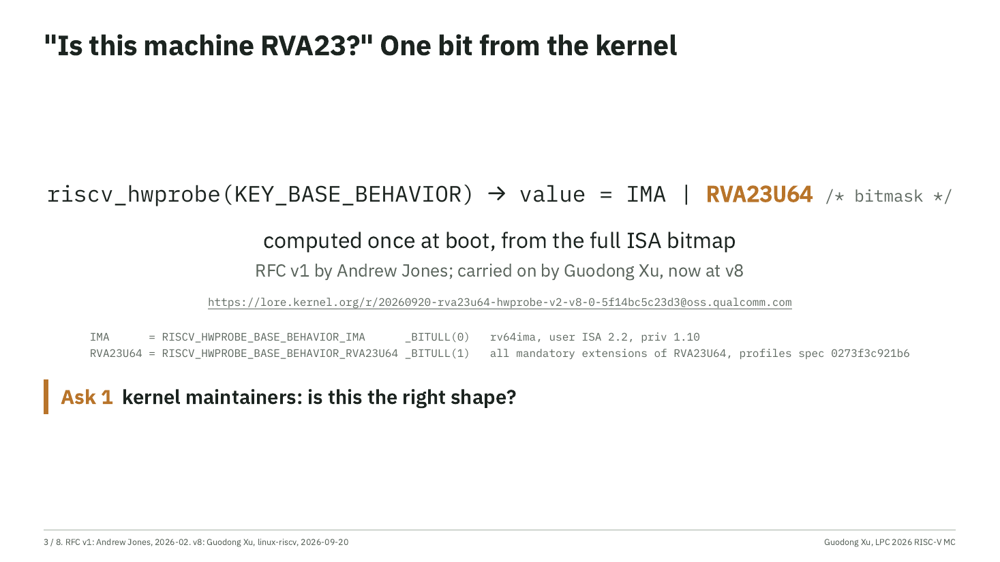
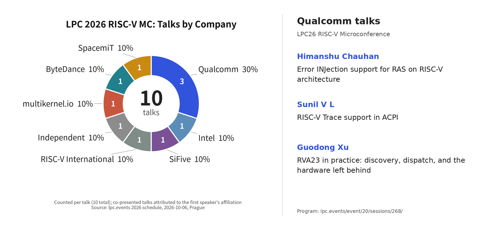
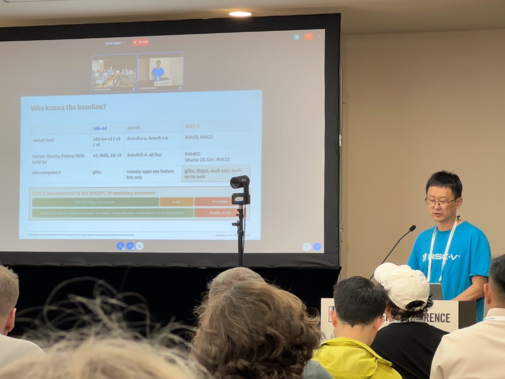
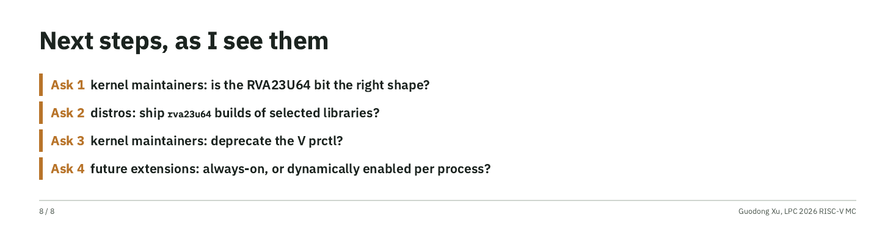
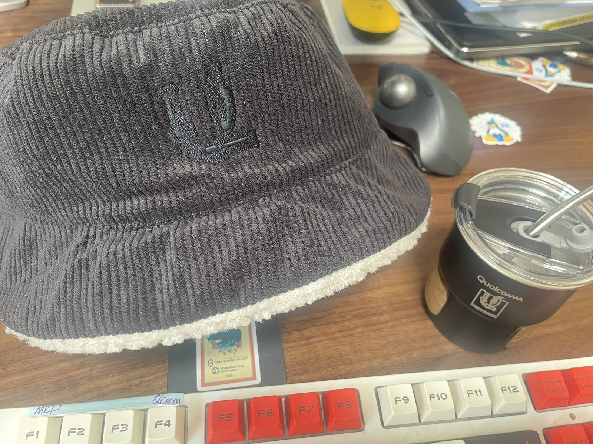

Attending Linux Plumbers Conference this October felt different from being at RISC-V Summit Europe in June. Since joining Qualcomm, I’ve had more opportunities to work with others across the RISC-V ecosystem.

One of those opportunities has been through RISE. Within Qualcomm’s RISC-V team, I’ve gotten to know colleagues representing Qualcomm in RISC-V International and RISE working groups, along with developers contributing to those efforts. I’ve also joined two RISE working groups: Platform and Enablement & Optimization.
Meanwhile, my work on the Linux kernel’s rva23u64 hwprobe patch series has
continued. The v8 series is available on lore. [1] I submitted my first
version in February and gave a joint talk with Charlie Jenkins of Tesla at RISC-V Summit Europe 2026 in
June. Working on RVA23 support in Linux has been a recurring theme for me over the past several months.
Why an rva23u64 Bit?
RVA23 Profile 1.0 was ratified by RISC-V International in October 2024. It targets application processors, including those used in servers, client devices, and mobile phones. It includes 39 mandatory extensions and 15 optional extensions.
Thanks to the work of many community contributors, all 39 mandatory extensions had Linux kernel support
by v7.0-rc1 in February this year. By then, most of these extensions already had their own feature bits
in the kernel’s riscv_isa bitmap. A few, including B and Zic64b, still lacked dedicated
bits, which my patch series added later.

Having all the mandatory extensions supported in the kernel is one thing. Knowing whether the machine you’re using is RVA23-compliant is another.
From a user’s perspective, the question is simple: is my machine RVA23-compliant?
It should be a simple yes or no. Yet the existing interfaces expose individual features rather than a single answer about the profile as a whole.
Across the software stack, glibc and GCC, libraries such as OpenSSL and zlib-ng, and language runtimes such as Go maintain their own feature-detection logic. Each checks the extensions relevant to its code paths. For software that wants to use RVA23 as a baseline, however, there is an additional task: checking those features against the profile’s requirements. That is not always possible with the information available.
The hwprobe detection tool written by Heinrich Schuchardt of Canonical provides a concrete
example. It performs 40 checks across three hwprobe keys, yet can only conclude that a
machine is “probably RVA23.” [3]
The patch series I’m working on [1] moves that profile check into the
kernel. At boot, the kernel would determine whether the system meets the RVA23 requirements and expose
the result as a single bit. Kernel code could check it directly, while user space could query it through
the hwprobe UAPI, with a low-cost path through the vDSO. Software could then establish a
common baseline with one check, while still checking additional features where needed.

The problem seemed straightforward enough. Andrew Jones of Qualcomm posted RFC v1 on February 6, a day before I posted my own series. Since his RFC came first, I set mine aside and focused on reviewing his proposal. I spent part of the Chinese New Year holiday writing a detailed review, and the feedback was well received.
Later, when Andrew had less time to spend on the series, we agreed that I would take over, starting with v2, and work toward getting it merged. The code itself wasn’t especially complicated, and I initially expected the series to be merged before the RISC-V Summit Europe in June. Eight versions later, with v9 on the way, it’s clear that there were more architectural details to work through than I had anticipated.
That hasn’t been a bad thing.
Along the way, the discussions have helped move at least five related patch efforts forward, directly or indirectly:
- Preparatory patches: Jesse Taube of Red Hat first posted his Zicclsm support patch in June 2024. Charlie Jenkins first posted his patch to standardize extension-name capitalization in December 2025. Both reached mainline through my v5 series, among six preparatory patches merged across Linux v7.2 and v7.3 ahead of the core changes.
- Zic64b support: Qingwei Hu of ByteDance contributed Zic64b cpufeature and
hwprobesupport. We worked together to incorporate it into the series. - Reporting only usable extensions: While responding to Radim Krčmář of Qualcomm’s
review of v8, I found that
hwprobeincorrectly reported Zfa and Zcd on harts without an FPU. Radim expanded the fix into a six-patch series, “riscv:hwprobe: do not report disabled extensions” [4]. - Simplifying cpufeature macros: Conor Dooley of Microchip posted an RFC to remove
RISCV_ISA_EXT_BUNDLEfrom cpufeature and retainSUPERSET. It followed a discussion under the first patch of my v8 series about which macro should represent the B extension. In his email [5], he noted that he had written the RFC during a talk at LPC26, on a laptop where he couldn’t test it. - Deprecating the controls for disabling V: Samuel Holland of SiFive posted a patch
series [6] to deprecate the
prctlandsysctlinterfaces that allow user space to dynamically disable the V extension. That grew out of the discussion around Ask 3, which I’ll return to below.
Those related changes matter too. Even while the profile bit itself is still under review, the discussions around it have led to useful work elsewhere in the kernel.
Bringing the Discussion to Prague
In mid-August, with support from Qualcomm, I decided to try submitting a proposal to Linux Plumbers Conference. By then, the August 7 proposal deadline had passed by 12 days. Only two days remained before the microconferences finalized their schedules, and attendee registration had sold out on August 15.
On August 19, I wrote to Drew Fustini of Tenstorrent, one of the RISC-V Microconference organizers, to explain the topic and ask whether there was still a chance to present it. He replied that day:
“I think this is a great topic and it is too bad it is not earlier.”
Three days later, he added:
“I think the RVA23 topic is important.”
Things fell into place after that. Drew explained to the conference organizers that the proposal continued a discussion from the previous year, and offered me the one remaining speaker pass of the two allocated to the RISC-V Microconference.
Having a clear purpose helped me step outside my comfort zone.
Over the next month and a half, I read through Bugzilla 220795, the report about glibc crashing after V was disabled, and the related linux-riscv discussions. I then shared my thoughts [7] on the mailing list.
In parallel, I looked into how glibc uses IFUNC resolvers for function-level dispatch, and how x86-64 and arm64 handle successive architecture baselines: x86-64-v2/v3/v4 levels detected through CPUID, and ARMv8.x baselines combined with HWCAP feature bits.
On September 15, I started a discussion in the RISE Platform Working Group. At the meeting the following day, participants included Peter Bergner of Tenstorrent, a glibc contributor; Andy Chiu, the original author of the interfaces for disabling V; Linux kernel developers Drew Fustini of Tenstorrent and Samuel Holland of SiFive. Contributors from Andes, Red Hat, SUSE and SpacemiT also joined. I appreciated how seriously everyone engaged with the topic. Several points of agreement from that meeting became the foundation of my LPC talk.
I also contacted GCC RISC-V maintainer Jeff Law, now a colleague at Qualcomm. He saw value in the series, writing:
“I can see numerous ways that would be interesting/valuable.”
Jeff invited me to the RISC-V BoF he chaired at GNU Tools Cauldron on October 3. His final slide covered glibc and raised a closely related question: should there be RVA23-profile builds of glibc, selected automatically through glibc-hwcaps? My Ask 2 took that idea to the distros: would they ship RVA23U64 builds of selected libraries?
As he put it:
“do we want RVA23 profile builds of glibc, selected through glibc-hwcaps - so that if you have an RVA20 and an RVA23 library for glibc, it will just select the right one automatically, and then we have overrides on a per-microarchitecture basis as needed.”
By then, I felt much more confident about the four asks in my slides.
Four Asks at LPC26
At 4 p.m. on October 6, I stood on stage in the Small Theatre at the Prague Congress Centre. In the audience were RISC-V kernel contributors from Tenstorrent, SiFive, Google, Andes, ByteDance, SpacemiT, BayLibre, and Qualcomm. The RISC-V Microconference had ten talks this year, three presented by Qualcomm contributors.


I brought four asks to the session, and came away with clear responses to most of them. The eight-page slide deck [8] and the conference session page [9] are available online.

Ask 1: Does the rva23u64 Bit Make Sense?
My first question was whether the proposed rva23u64 bit had the right semantics. Paul
Walmsley of SiFive, one of the maintainers of the RISC-V architecture in the Linux kernel, responded:
“It looks pretty good to me ... most of them are ready to go.”
Three days later, on October 9, Paul picked up the first eight of the eleven patches in v8 into
riscv/for-next, as recorded in the patchwork notification [10]. They are queued for the next merge window, not yet merged into mainline.
The remaining three core patches will be revised in v9 to address two points raised during the discussion. Peter wanted the bit to mean “supports RVA23,” with corresponding RVA22 and RVA20 bits so glibc could fall back through the profiles. Palmer Dabbelt asked for explicit documentation that this bit does not inherit the historical implicit behavior associated with the IMA bits.
Ask 2: Can Profiles Guide Library Selection?
My second ask was for the distros: once the kernel bit lands, would they ship RVA23U64 builds of selected libraries?
Peter reiterated the proposed approach for glibc: build libraries for different profiles and let the loader select the appropriate version through glibc-hwcaps, using the profile bits reported by the kernel. IFUNC would still handle microarchitecture-specific choices. This echoed the direction Jeff Law had discussed at the RISC-V BoF at GNU Tools Cauldron three days earlier.
The idea had already drawn interest from the distro side. In a June 9 email, Debian developer Aurélien
Jarno had described the proposed hwprobe interface as a good fit for shipping
RVA23-optimized versions of selected libraries through glibc-hwcaps.
It was encouraging to hear the kernel, toolchain, and distro discussions coming together around the same idea.
Ask 3: Should We Deprecate Disabling V?
My third question concerned the interfaces that let user space dynamically disable V, which can undermine the assumptions behind library dispatch. Paul said deprecation “makes sense,” provided that no existing users depended on the interfaces. No such users were identified in the discussion.
The following morning, Samuel Holland posted a three-patch series to linux-riscv [6]. Its cover letter stated:
“After several discussions within RISE and at Linux Plumbers 2026, consensus is that these controls create more trouble than benefits”
Ask 4: What About Future Stateful Extensions?
My final question was how to handle future extensions that introduce register state, such as matrix extensions. We ran out of time to explore this in detail during the session. In his cover letter, posted after the conference session, Samuel outlined the direction for future extensions:
“There is also no plan to add similar controls for future extensions that add register state (e.g. matrix)”
In other words, the stated intention is not to repeat the model of allowing user space to dynamically disable an extension such as V. This was not a separate, detailed discussion of future matrix support, but it did give us a useful indication of the direction.
A Penguin Hat
It was rewarding to see so many people engage with questions I’d spent the past few months working on. There was also an unexpected personal moment: on October 7, after the final talk of LPC26, Drew Fustini stopped me and handed me a felt hat with the LPC plumber penguin embroidered on it. I was delighted.

Thank you to everyone who reviewed the patches, took part in the discussions, and helped move the work forward.
Update (October 10): At its largest, the series contained 17 patches. Six are now in
mainline, and another eight have been picked up into riscv/for-next. I’ll carry the
remaining three into v9 and address the concerns raised during review.
References
- Guodong Xu: RVA23U64
hwprobepatch series, v8 - Guodong Xu: RVA23 kernel support timeline
- Heinrich Schuchardt:
hwprobedetection tool - Radim Krčmář: “riscv:
hwprobe: do not report disabled extensions” - Conor Dooley: RFC discussion on simplifying cpufeature macros
- Samuel Holland: patch series to deprecate the controls for disabling V
- Guodong Xu: mailing-list reply on vector availability and library dispatch
- Guodong Xu: “RVA23 in practice”, LPC26 slide deck
- LPC26: “RVA23 in practice” conference session
- Patchwork notification: v8 patches picked up into riscv/for-next
Photos by Guodong Xu. Slides from the LPC26 talk deck [8]. The coverage chart is from the RVA23 kernel support timeline on this site. The LPC plumber penguin is the Linux Plumbers Conference mascot.